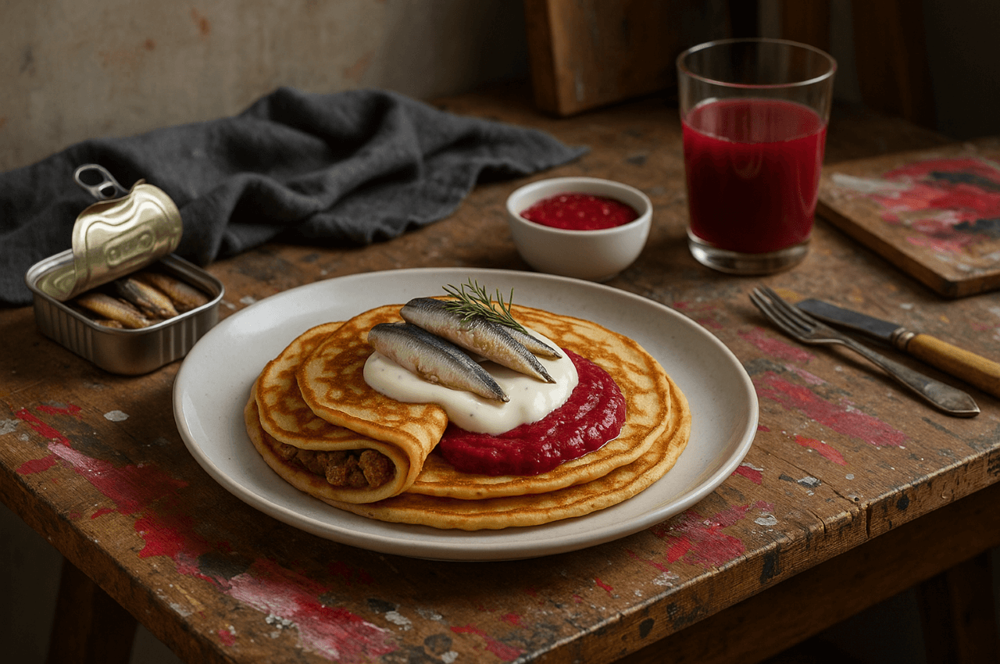
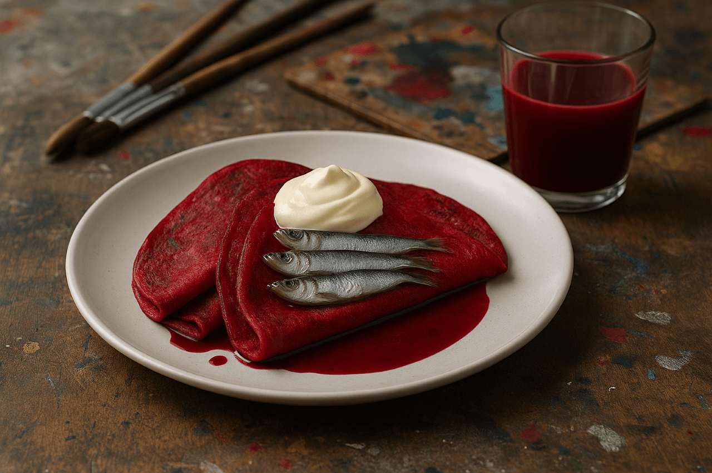

Rödbetsjuice och sardiner-pannkakor
Rödbetans jordiga sötma färgar pannkakan vackert rosa, medan sardinerna tillför havssälta och fyllighet. En vågad och estetiskt slående rätt som garanterat sticker ut på bordet.
Ingredienser
- 2 dl vetemjöl
- 3 dl rödbetsjuice
- 3 dl mjölk
- 3 ägg
- 1 msk smör
- 1 burk sardiner i olja
- 2 vitlöksklyftor
Så här gör du
- Blanda smet med rödbetsjuice.
- Stek rosa pannkakor.
- Toppa med sardiner och vitlök.
Serveringsförslag
- 
- 